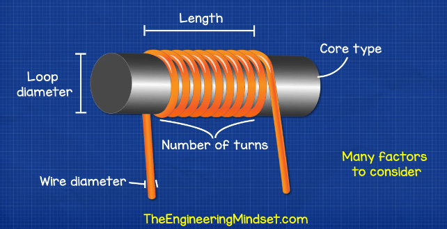
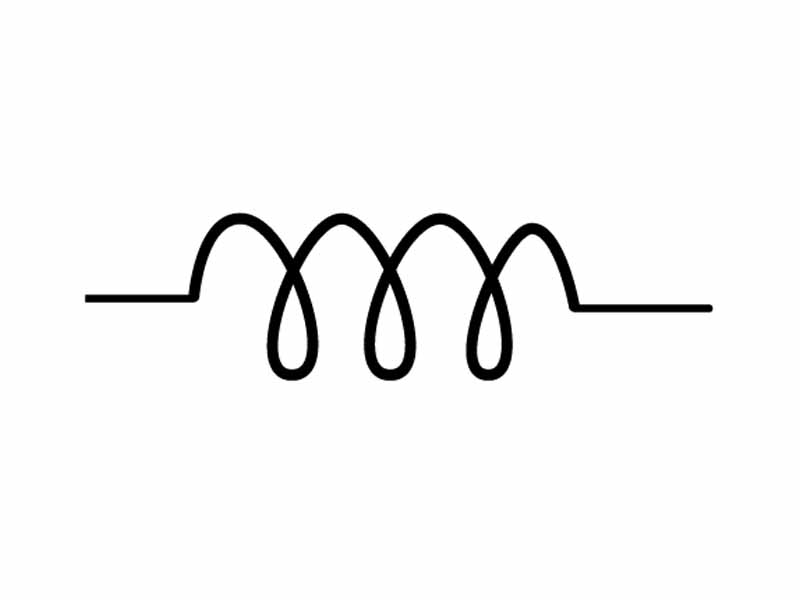
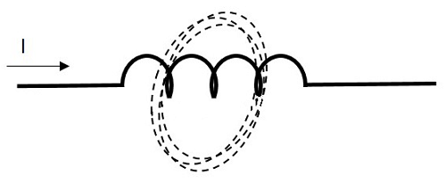
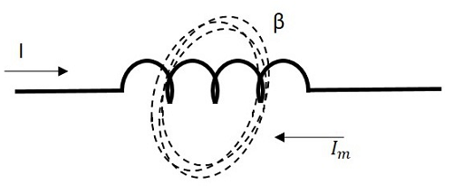
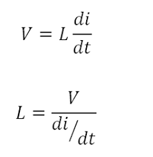
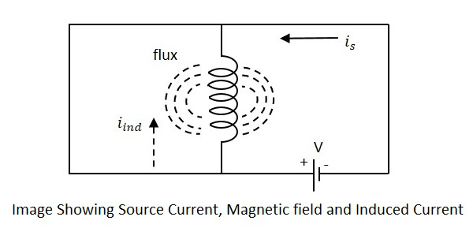
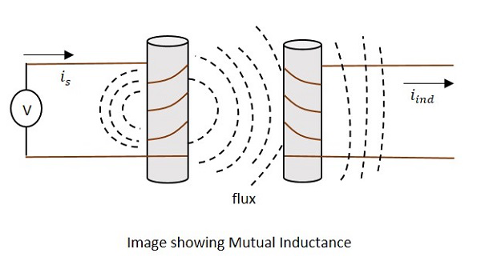

Inductor
What is a Inductor?
According to the Faraday’s law of Electromagnetic induction, When the current flowing through an inductor changes, the time-varying magnetic field induces a voltage in the conductor. According to lens law, the direction of induced EMF opposes the change in current that created it. Hence, induced EMF is opposite to the voltage applied across the coil. This is the property of an inductor.
The following figure shows how an inductor looks like.
An inductor blocks any AC component present in a DC signal. The inductor is sometimes wrapped upon a core, for example a ferrite core. It then looks as in the figure below.
Symbols
The standard units for capacitance is Farads. Generally, the values of capacitors available will be in the order of micro-farads, pico-farads and nano-farads. The symbol of a capacitor is as shown below.
Storage of Energy
One of the Basic properties of electromagnetism is that the current when flows through an inductor, a magnetic field gets created perpendicular to the current flow. This keeps on building up. It gets stabilized at some point, which means that the inductance won’t build up after that. When the current stops flowing, the magnetic field gets decreased.
This magnetic energy gets turned into electrical energy. Hence energy gets stored in this temporarily in the form of magnetic field.
Working of an Inductor
Now, if we consider an inductor which is made up of a conducting coil and when some current passes through the inductor, a magnetic field is created perpendicular to it. The following figure indicates an inductor with magnetic field around it.
If this current is named as Im which means the current produced due to the magnetic field and the magnetic field is indicated by β, the following figure indicates it.
This opposing current gains strength with the varying magnetic field, which gains energy by the input supply frequency. Hence as the input current becomes more and more AC with high frequency, the resulting opposing current also gains its strength in opposite direction to the very cause producing it. Now, this opposing current, tries to stop the high frequency AC to pass through the inductor, which means “blocking of AC”.
Inductance
The property of an inductor to get the voltage induced by the change of current flow, is defined as Inductance. Inductance is the ratio of voltage to the rate of change of current.
The rate of change of current produces change in the magnetic field, which induces an EMF in opposite direction to the voltage source. This property of induction of EMF is called as the Inductance.

Units −
• The unit of Inductance is Henry. It is indicated by L.
• The inductors are mostly available in milliHenrymilliHenry and μH microHenrymicroHenry.
Self Inductance
If a coil is considered in which some current flows, it has some magnetic field, perpendicular to the current flow. When this current keeps on varying, the magnetic field also changes and this changing magnetic field, induces an EMF, opposite to the source voltage. This opposing EMF produced is the self-induced voltage and this method is called as self-inductance.
The current is in the figure indicate the source current while iind indicates the induced current. The flux represents the magnetic flux created around the coil. With the application of voltage, the current is flows and flux gets created. When the current is varies, the flux gets varied producing iind.
This induced EMF across the coil is proportional to the rate of change in current. The higher the rate of change in current the higher the value of EMF induced.
E α (dI/dt)E α dI/dt
Where,
• E is the EMF produced
• dI/dt indicates the rate of change of current
• L indicates the co-efficient of inductance.
Self-inductance or Co-efficient of Self-inductance can be termed as
L = EdI/dt, L = EdIdt
actual equation is written as
E = −LdIdt, E = −LdIdt
Mutual Inductance
As the current carrying coil produces some magnetic field around it, if another coil is brought near this coil, such that it is in the magnetic flux region of the primary, then the varying magnetic flux induces an EMF in the second coil. If this first coil is called as Primary coil, the second one can be called as a Secondary coil.
When the EMF is induced in the secondary coil due to the varying magnetic field of the primary coil, then such phenomenon is called as the Mutual Inductance.
The current is in the figure indicate the source current while iind indicates the induced current. The flux represents the magnetic flux created around the coil. This spreads to the secondary coil also.
With the application of voltage, the current is flows and flux gets created. When the current is varies, the flux gets varied producing iind in the secondary coil, due to the Mutual inductance property.
Factors affecting Inductance
1. The length of the inductor coil is inversely proportional to the inductance of the coil. If the length of the coil is more, the inductance offered by that inductor gets less and vice versa.
2. The cross sectional area of the coil is directly proportional to the inductance of the coil. The higher the area of the coil, the higher the inductance will be.
3. With the number of turns, the coil affects the inductance directly. The value of inductance gets square to the number of turns the coil has. Hence the higher the number of turns, square of it will be the value of inductance of the coil.
4. The permeability μμ of the core material of inductor indicates the support the core provides for the formation of a magnetic field within itself. The higher the permeability of the core material, the higher will be the inductance.